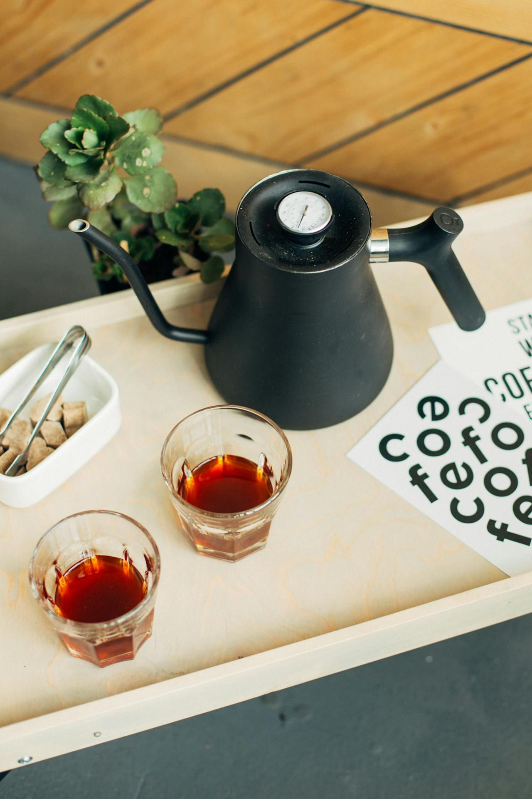

The Art of Tea Tasting: A Beginner's Guide to Unlocking Flavor Profiles
This content could introduce readers to the sensory experience of tea tasting, covering topics such as aroma, appearance, taste, and mouthfeel. It could offer guidance on how to properly taste and evaluate different types of tea, empowering readers to develop their palates and appreciate the nuances of each brew.

At the heart of tea tasting lies the appreciation of aroma, where fragrant notes dance tantalizingly from the cup, teasing the senses with hints of floral, fruity, or earthy undertones. From the delicate sweetness of green teas to the robust richness of black varieties, each brew offers a symphony of scents waiting to be savored.